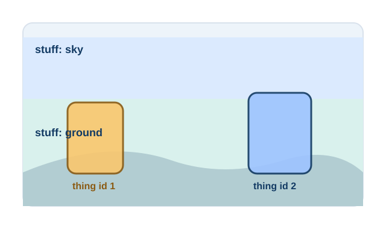

Definition
A panoptic output is a complete scene map. It has no unlabeled pixels: background regions such as road or sky are labeled as stuff, while countable objects such as cars or people are labeled as things with instance ids.

Things vs Stuff Classes
Things are countable objects, such as pedestrians, cars, chairs, fruits, or cells. Stuff refers to amorphous regions, such as road, sky, grass, water, tissue background, or soil.
Relationship with Semantic and Instance Segmentation
Panoptic segmentation can be viewed as a constraint-aware combination of semantic segmentation and instance segmentation. It keeps the dense class assignment of semantic segmentation while preserving individual identities for thing classes.
| Task | Stuff classes | Thing instances | Complete pixel map |
|---|---|---|---|
| Semantic | Yes | No | Yes |
| Instance | No, usually foreground objects only | Yes | No |
| Panoptic | Yes | Yes | Yes |
Panoptic Quality
Panoptic Quality evaluates both recognition and segmentation quality. It rewards correct matching of predicted and ground-truth segments and penalizes false positives and false negatives.
RQ = TP / (TP + 0.5 FP + 0.5 FN)
Applications
Autonomous Driving
Unify lane, road, sky, person, vehicle, and sign understanding in one scene representation.
Robotics
Support manipulation and navigation by separating objects while retaining background layout.
Agriculture
Distinguish crop rows, soil, weeds, fruits, leaves, and individual plants for field analytics.
Medical Imaging
Represent tissue regions and countable anatomical or cellular instances in one prediction.
Tutorial Cards
Panoptic Segmentation Basics
Learn the output format, class taxonomy, and non-overlap constraint.
Panoptic Quality Explained
Work through SQ, RQ, and matched segment calculations.
Mask2Former Overview
Study how mask classification can address multiple segmentation tasks.
Panoptic Dataset Preparation
Convert class masks and instance annotations into panoptic labels.